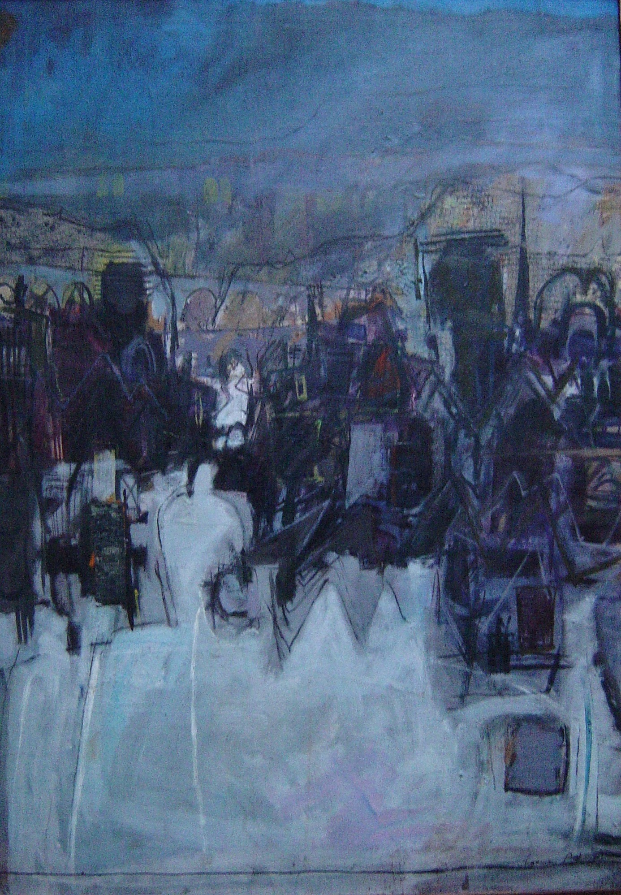

Norman Ackroyd
1938 – 2024
Artist Biography
Norman Ackroyd is a Leeds-born printmaker and painter who studied at Leeds College of Art and then Royal College of Art London 1961-4. Ackroyd taught in a number of art colleges before becoming professor of print at the Royal Academy Schools. The winner of multiple awards, Ackroyd has had several dozen solo shows including Anderson O’Day in London, Compass Gallery Glasgow and galleries in Chile, Los Angeles and Washington amongst others. His work is held in the UK by the Tate Gallery, British Museum, Victoria and Albert Museum, British Council and a number of provincial collections. International collections holding Ackroyd’s paintings or etchings include the Museum of Modern Art in New York, National Galleries in the US, Canada, Norway and South Africa plus other public collections in Australia, Switzerland, Holland and elsewhere, Considered one of Britain’s finest landscape artists, particularly in etchings, Ackroyd was elected a member of the Royal Academy in 1991 and a senior fellow of the Royal College of Art in 2000.

Townscape, 1963